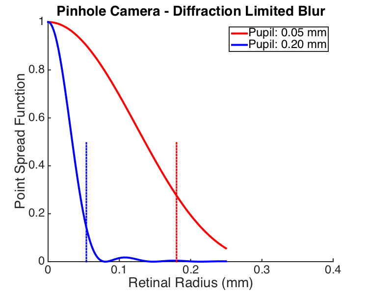
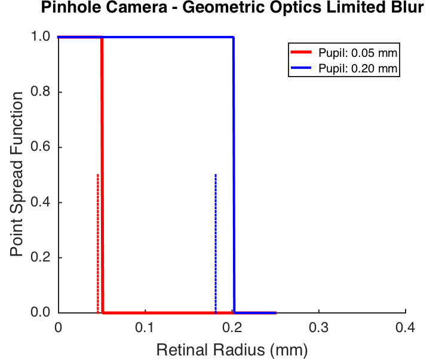

Contents
function varargout = cbOpticsImage_Fig_PinholeOptics(varargin) % % Explore geometric and diffraction optical blur for a pinhole eye. % % The default parameters show results for an eye about the size of the % human eye but for much smaller pupils. The pupil sizes chosen illustrate % a range where the factor limiting the size of the PSF switches between % diffraction and the geometry of image formation. % % To see this, run the script and compare the two figures. For the smaller % pupil size, the diffraction limited blur is smaller than size of the % geometric optics blur. For the larger pupil, this relation is reversed. % For the intermediate pupil size (no figure, see printout to command % window), the blur from the two factors is about the same. Note that the % regime where the crossover happens is for pupils of the order of 0.1 mm % in diameter, about 10 times smaller than the human pupil. % % Also note that the size of the blur for a pinhole camera with these pupil % sizes is considerably larger than that of the real human eye, which has % an optical resolution about 10 times better, that is aPSF about 10 times % smaller). % % Possible extensions for the interested reader: % - Examine how the relation between the two types of blur depends on what % PSF volume is chosen to compute the equivalent blur circle. % - Compare the blur circles here computed with the size of the real human % PSF. % - Examine how the blur due to diffraction depends on wavelength. % - Examine how the geometric blur varies with distance to the object. % This begins to get at the concept of depth of field. % % (c) David Brainard and Andrew Stockman, 2014 varargout = UnitTest.runValidationRun(@ValidationFunction, nargout, varargin); end
Function implementing the isetbio validation code
function ValidationFunction(runTimeParams)
Hello
UnitTest.validationRecord('SIMPLE_MESSAGE', sprintf('%s',mfilename));
Set parameters
calcParams.eyeDiameterMm = 24; calcParams.wavelengthNm = 550; calcParams.distanceToSourceMm = 2000; calcParams.eqCriterionPSFFraction = 0.8; calcParams.pupilDiametersMm = [0.05 0.1 0.2]; nPupilDiameters = length(calcParams.pupilDiametersMm);
Compute diffraction blur for each pupil size
The Psychtoolbox routine AiryPattern does the work.
% Set up radii to compute on. Start by specifying the range in retinal mm % and then converting to degrees. retinalRadiiMm = 0.5; retinalRadiiDeg = RetinalMMToDegrees(retinalRadiiMm,calcParams.eyeDiameterMm); retinalRadiiRad = degtorad(retinalRadiiDeg); % Set up grid matrices, so that we can convert radius to two-dimensional % image. Although it is probably inefficient to compute on all the radii of % a square image matrix (as opposed to computing for linear radii and then % propogating the andser onto an image), computers are fast enough that we % don't care. nPixels = 501; centerPixel = round(nPixels+1)/2; radiusMatrixRaw = MakeRadiusMat(nPixels,nPixels,centerPixel,centerPixel)/nPixels; radiusMatrixDegs = retinalRadiiDeg*radiusMatrixRaw; radiusMatrixRad = retinalRadiiRad*radiusMatrixRaw; radiusMatrixMm = retinalRadiiMm*radiusMatrixRaw; radiusLineMm = radiusMatrixMm(centerPixel,centerPixel:end); % Do the calculation for each pupil size and normalize volume of PSF to % unity. Also extract 1d slice. for p = 1:length(calcParams.pupilDiametersMm) pupilDiameterMm = calcParams.pupilDiametersMm(p); diffractionPSFImage{p} = AiryPattern(radiusMatrixRad,pupilDiameterMm,calcParams.wavelengthNm); diffractionPSFImage{p} = diffractionPSFImage{p}/sum(diffractionPSFImage{p}(:)); diffractionPSFSlice{p} = diffractionPSFImage{p}(centerPixel,centerPixel:end); end
Compute equivalent blur circle
For comparison with geometric blur, it is convenient to characterize the diffraction limited PSF by an equivalent blur circle. We do this by finding the radius that contains a criterion fraction of the pupil volume, and calling that the equivlent cirular psf. This is a rough and ready approximation, but we find it conceptually convenient as a summary of the size of the PSF.
radiiMm = unique(radiusMatrixMm(:)); for p = 1:length(calcParams.pupilDiametersMm) for i = 2:length(radiiMm) index = find(radiusMatrixMm <= radiiMm(i)); volume(i) = sum(diffractionPSFImage{p}(index)); if (volume(i) > calcParams.eqCriterionPSFFraction) lambda = (calcParams.eqCriterionPSFFraction-volume(i-1))/(volume(i)-volume(i-1)); eqDiffractionBlurCircleDiameterMm(p) = (1-lambda)*radiiMm(i-1) + lambda*radiiMm(i); eqDiffractionBlurCircleDiameterDegs(p) = RetinalMMToDegrees(eqDiffractionBlurCircleDiameterMm(p),calcParams.eyeDiameterMm); break; end end % Compute circular psfs at the equivalent diameters % % Build the image eqDiffractionPSFImageMm{p} = ones(size(radiusMatrixMm)); index = find(radiusMatrixMm > eqDiffractionBlurCircleDiameterMm(p)); eqDiffractionPSFImageMm{p}(index) = 0; % Normalize volume and extract slice eqDiffractionPSFImageMm{p} = eqDiffractionPSFImageMm{p}/sum(eqDiffractionPSFImageMm{p}(:)); eqDiffractionPSFSlice{p} = eqDiffractionPSFImageMm{p}(centerPixel,centerPixel:end); % Print summary of this calculation fprintf('Pupil size %0.2f mm, diffraction equiv blur cicle (%d%% volume) %0.3f mm, %0.3f deg\n',... calcParams.pupilDiametersMm(p),round(100*calcParams.eqCriterionPSFFraction),eqDiffractionBlurCircleDiameterMm(p),eqDiffractionBlurCircleDiameterDegs(p)); end fprintf('\n');
Pupil size 0.05 mm, diffraction equiv blur cicle (80% volume) 0.180 mm, 0.430 deg Pupil size 0.10 mm, diffraction equiv blur cicle (80% volume) 0.100 mm, 0.239 deg Pupil size 0.20 mm, diffraction equiv blur cicle (80% volume) 0.054 mm, 0.128 deg
Plot a slice of the diffraction limited psf
The plot shows a slice through the center of the psf for two pupil sizes (the smallest and largest that we compute for.).
The plot works better to compare shapes if we normalize PSFs to max of 1 rather than to unit volume, but be aware that the height of the volume normalized PSF will be different as a function of pupil size.
The plot also shows radius of equivalent blur circle as dashed vertical lines.
if (runTimeParams.generatePlots) [diffractionSliceFig,diffractionSliceFigParams] = cbFigInit; diffractionSliceFigParams.xLimLow = 0; diffractionSliceFigParams.xLimHigh = 0.4; diffractionSliceFigParams.xTicks = [0 0.1 0.2 0.3 0.4]; diffractionSliceFigParams.xTickLabels = {}; diffractionSliceFigParams.yLimLow = 0; diffractionSliceFigParams.yLimHigh = 1; diffractionSliceFigParams.yTicks = [0.0 0.2 0.4 0.6 0.8 1]; diffractionSliceFigParams.yTickLabels = {}; plot(radiusLineMm,diffractionPSFSlice{1}/max(diffractionPSFSlice{1}),'r','LineWidth',diffractionSliceFigParams.lineWidth); plot(radiusLineMm,diffractionPSFSlice{end}/max(diffractionPSFSlice{end}),'b','LineWidth',diffractionSliceFigParams.lineWidth); plot([eqDiffractionBlurCircleDiameterMm(1) eqDiffractionBlurCircleDiameterMm(1)],[0 0.5],'r:','LineWidth',diffractionSliceFigParams.lineWidth-1); plot([eqDiffractionBlurCircleDiameterMm(end) eqDiffractionBlurCircleDiameterMm(end)],[0 0.5],'b:','LineWidth',diffractionSliceFigParams.lineWidth-1); xlabel('Retinal Radius (mm)','FontSize',diffractionSliceFigParams.labelFontSize); ylabel('Point Spread Function','FontSize',diffractionSliceFigParams.labelFontSize); title('Pinhole Camera - Diffraction Limited Blur','FontSize',diffractionSliceFigParams.titleFontSize); cbFigAxisSet(diffractionSliceFig,diffractionSliceFigParams); legend({sprintf('Pupil: %0.2f mm',calcParams.pupilDiametersMm(1)) sprintf('Pupil: %0.2f mm',calcParams.pupilDiametersMm(end))},'Location','NorthEast','FontSize',diffractionSliceFigParams.legendFontSize); FigureSave([mfilename '_BlurDiffractionSlice'],diffractionSliceFig,diffractionSliceFigParams.figType); end
Compute geometric blur for a pinhole optics.
This depends on the distance to the object, and in the limit of a infitely distant point source is just the pupil diameter directly.
We think that the distance dependence is also true of diffraction, in the sense that using the Airy pattern as the PSF results from some approximations that treat the arriving wavefront as planar at the pupil.
In any case, we'll use a distance that is big with respect to the scale of the model eye.
for p = 1:length(calcParams.pupilDiametersMm) % Geometric calculation geometricBlurCircleDiameterMm(p) = ((calcParams.distanceToSourceMm+calcParams.eyeDiameterMm)/calcParams.distanceToSourceMm)*calcParams.pupilDiametersMm(p); % For a really fair comparison with diffraction, should find the % equivalent circle diameter, that contains the criterion fraction of % the volume. eqGeometricBlurCircleDiameterMm(p) = sqrt(calcParams.eqCriterionPSFFraction)*geometricBlurCircleDiameterMm(p); eqGeometricBlurCircleDiameterDegs(p) = RetinalMMToDegrees(eqGeometricBlurCircleDiameterMm(p),calcParams.eyeDiameterMm); eqGeometricPSFImageMm{p} = ones(size(radiusMatrixMm)); index = find(radiusMatrixMm > geometricBlurCircleDiameterMm(p)); eqGeometricPSFImageMm{p}(index) = 0; % Normalize volume and extract slice eqGeometricPSFImageMm{p} = eqGeometricPSFImageMm{p}/sum(eqGeometricPSFImageMm{p}(:)); eqGeometricPSFSlice{p} = eqGeometricPSFImageMm{p}(centerPixel,centerPixel:end); % Print summary of this calculation fprintf('Pupil size %0.2f mm, geometric equiv blur cicle (%d%% volume) %0.3f mm, %0.3f deg\n',... calcParams.pupilDiametersMm(p),round(100*calcParams.eqCriterionPSFFraction),eqGeometricBlurCircleDiameterMm(p),eqGeometricBlurCircleDiameterDegs(p)); end fprintf('\n');
Pupil size 0.05 mm, geometric equiv blur cicle (80% volume) 0.045 mm, 0.108 deg Pupil size 0.10 mm, geometric equiv blur cicle (80% volume) 0.091 mm, 0.216 deg Pupil size 0.20 mm, geometric equiv blur cicle (80% volume) 0.181 mm, 0.432 deg
Plot a slice through the geometric blur circle
The plot shows the geometry-limited PSF, which is just a circle. It doesn't look quite like a circle because of numerical precision issues in the 2D computation of the PSF implemented here, but the basic point is clear.
The plot also shows as a dashed line the radius that contains the same criterion fraction of the PSF mass as for the diffraction limited calculation. This provides a metric that may be compared to the size of the same metric for the diffraction limited PSF.
if (runTimeParams.generatePlots) [geometricSliceFig,geometricSliceFigParams] = cbFigInit; geometricSliceFigParams.xLimLow = 0; geometricSliceFigParams.xLimHigh = 0.4; geometricSliceFigParams.xTicks = [0 0.1 0.2 0.3 0.4]; geometricSliceFigParams.xTickLabels = {}; geometricSliceFigParams.yLimLow = 0; geometricSliceFigParams.yLimHigh = 1; geometricSliceFigParams.yTicks = [0.0 0.2 0.4 0.6 0.8 1]; geometricSliceFigParams.yTickLabels = {}; plot(radiusLineMm,eqGeometricPSFSlice{1}/max(eqGeometricPSFSlice{1}),'r','LineWidth',geometricSliceFigParams.lineWidth+1); plot(radiusLineMm,eqGeometricPSFSlice{end}/max(eqGeometricPSFSlice{end}),'b','LineWidth',geometricSliceFigParams.lineWidth); plot([eqGeometricBlurCircleDiameterMm(1) eqGeometricBlurCircleDiameterMm(1)],[0 0.5],'r:','LineWidth',geometricSliceFigParams.lineWidth-1); plot([eqGeometricBlurCircleDiameterMm(end) eqGeometricBlurCircleDiameterMm(end)],[0 0.5],'b:','LineWidth',geometricSliceFigParams.lineWidth-1); xlabel('Retinal Radius (mm)','FontSize',geometricSliceFigParams.labelFontSize); ylabel('Point Spread Function','FontSize',geometricSliceFigParams.labelFontSize); title('Pinhole Camera - Geometric Optics Limited Blur','FontSize',geometricSliceFigParams.titleFontSize); cbFigAxisSet(geometricSliceFig,geometricSliceFigParams); legend({sprintf('Pupil: %0.2f mm',calcParams.pupilDiametersMm(1)) sprintf('Pupil: %0.2f mm',calcParams.pupilDiametersMm(end))},'Location','NorthEast','FontSize',geometricSliceFigParams.legendFontSize); FigureSave([mfilename '_BlurGeometricSlice'],geometricSliceFig,geometricSliceFigParams.figType); end
Save validation data
UnitTest.validationData('calcParams', calcParams); UnitTest.validationData('diffractionPSFSlice', diffractionPSFSlice); UnitTest.validationData('eqGeometricBlurCircleDiameterMm', eqGeometricBlurCircleDiameterMm); UnitTest.validationData('eqGeometricPSFSlice', eqGeometricPSFSlice);
end